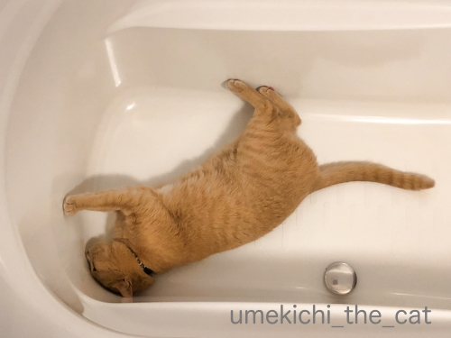
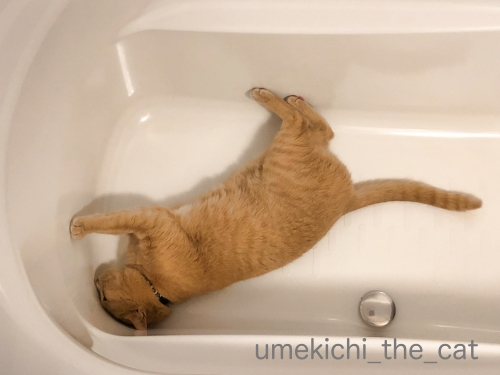

バスタブでぐねぐね [梅吉]
バスタブでぐねぐねする梅吉さんwww

ここでこんな風に遊べるんだから
クリアハンモックにだって出来るはず！！
今日は簡単更新にて。
前記事のお返事も書けてないのでコメント欄も閉じてますm(_ _)m
〜〜〜〜〜追記〜〜〜〜〜
わー(＠◇＠)
コメント欄閉じ忘れちゃった(⌒-⌒;
せっかくzombiekongさんとriverwalkさんがコメントしてくださったので
いつも通りコメント大募集ですw
お二人とも遅い時間にコメントありがとうございます。
私はちゃんと寝ているので倒れませんよー＾＾
お二人こそちゃんと寝てくださいね！
ぐねぐね写真だけじゃコメントつけにくいわぁ・・・かもしれないので
皆様への質問！
ご自分のブログって1日に何回くらいご覧になりますか？
コメントはあったほうが嬉しいですよね？？
ご自分のブログ（自分で書いた内容の）の満足度ってパーセンテージで表すとどのくらいですか？？？
で、皆さん大体何時頃に寝てますか？？？？(*>艸<)
例によってお返事は遅いですがよろしくお願いいたします(^_－)☆
 ↑ガブッと一押し↑
↑ガブッと一押し↑

ここでこんな風に遊べるんだから
クリアハンモックにだって出来るはず！！
今日は簡単更新にて。
前記事のお返事も書けてないのでコメント欄も閉じてますm(_ _)m
〜〜〜〜〜追記〜〜〜〜〜
わー(＠◇＠)
コメント欄閉じ忘れちゃった(⌒-⌒;
せっかくzombiekongさんとriverwalkさんがコメントしてくださったので
いつも通りコメント大募集ですw
お二人とも遅い時間にコメントありがとうございます。
私はちゃんと寝ているので倒れませんよー＾＾
お二人こそちゃんと寝てくださいね！
ぐねぐね写真だけじゃコメントつけにくいわぁ・・・かもしれないので
皆様への質問！
ご自分のブログって1日に何回くらいご覧になりますか？
コメントはあったほうが嬉しいですよね？？
ご自分のブログ（自分で書いた内容の）の満足度ってパーセンテージで表すとどのくらいですか？？？
で、皆さん大体何時頃に寝てますか？？？？(*>艸<)
例によってお返事は遅いですがよろしくお願いいたします(^_－)☆
タグ：バスタブ

カフェオレ色の梅吉

梅吉 2023年8月10日 永眠


梅吉と出会った譲渡会

犬猫の理由なき殺処分ゼロ
妄想広告
UMEKICHI 光

爆発的に早い！
時々攻撃的！
Thanks to Mr.Boss365
爆発的に早い！
時々攻撃的！
Thanks to Mr.Boss365

すみません。コメント欄空いてます。お忙しい時はお返事いただかなくて大丈夫ですよ。無理しないでね。
by zombiekong (2019-05-09 01:05)
倒れないようにしてくださいね。無理は禁物です＾＾
by riverwalk (2019-05-09 02:13)
いや、ぐねぐね写真でもコメントしますけど(笑)
でも、リクエストにお応えして(^^;;
自分のブログを見る回数は不明だけど、管理ページは1日になんども見ます。
当日記事じゃなくて前記事へのコメントとかまとめ読みの方がいらっしゃったとか、大体の様子がここでわかるから。
コメントはあった方が嬉しいですよねー。niceだけの人とか読んでないんじゃないかなって思うもの。もっともnice押し逃げの人には、自分も押し逃げにしてるけど。ただ、コメントの内容自体がズレズレだったりすると、がっかりぽんです。
by ChatBleu (2019-05-09 06:17)
自分のブログをチェックする回数は決めてないです。
コメント内容が気になる時は多めにチェックしてるかも？
自分が書いたコメントに返事があると
もちろん嬉しいですけど、無くても平気。
どうせ自分が大した事書いてないので（爆）
自分のブログの満足度ですかぁ、考えた事が無いです。
毎日書くので精一杯＾＾；
毎晩10時～11時の間に寝てますね。
早ければ9時から寝るときもありますよ。
朝は5時には起きるので、9時から5時まで（仕事じゃないけど）（爆）
by ぽちの輔 (2019-05-09 07:14)
梅吉さん、頭も手足も使ってバスタブを満喫中ですねぇ=(^.^)=
バスタブのコーナーの丸みが梅吉さんの頭の丸みに
ぴったりフィット♪( ´▽｀)
自分のブログ訪問は1日に３回くらいかなぁ=(^.^)=
コメントはいただくと嬉しいです♪( ´▽｀)
今はノートPCがめちゃくちゃ不調でスマホ投稿なので
満足度はかなり低いです( T_T)
by ニッキー (2019-05-09 07:16)
毎回、バスタブをキレイにしておかないといけませんね♪
お水を抜きっぱなしには出来ない（笑
梅吉さんがこんなにグネグネ満喫しているなら
頑張れますかね！
自分のブログ・・・結構、見ているかもしれません（笑
私のブログはダラダラと長いので
写真を選別し、トリミングしたりして
作成するのに半日以上かかるので(;^_^A
コメントはあると嬉しいです♪
満足度は考えたことがありません！
でももっと簡潔にスマートに出来たらいいのかもと
思ったことはあります！
寝るのはだいたい日付が変わるころです！
by きぃ (2019-05-09 07:52)
うーむ。
改めて考えると、自分のは1日2〜3回でしょうか。
コメントもらうのはめちゃ嬉しいくせに、
返事を書くのが、次の記事投稿より後になることも多々。
ここらがちょっとジレンマですわー。
満足度は、80%ぐらいでしょうか。
夜は12時〜1時の間が多いかも。
by よーちゃん (2019-05-09 08:49)
こんにちは。
梅吉君、水なしバスタブで睡眠グ（スイミング）かな？
◯PCで作業してる時は、休憩時、気分転換で度々見ています。
◯基本コメントは、あった方が嬉しいですね。嫌なコメントもありますが、コメント欄は自由な場所？常に開放が理想です。また、コメントに対する返信も常にしたい願望はありますが、無理はしない方針にしました。ちぃさんも無理は禁物です。
◯満足度、３１％かな？赤点ギリギリです。自己満足でやっているブログなので、点数あまり関係ないですが、楽しんでいるのである意味満足度は１００％の可能性もあります。難しい質問です。
◯１２時前には寝るようにしています。海外スポーツ中継時に時々イレギラー？します。
文章力がないので、書く事で文章力を強化？
「伝え方」を学んでいる感じです！？(=^･ｪ･^=)
by Boss365 (2019-05-09 10:39)
梅吉さんバスタブ好きなのですね！
by ma2ma2 (2019-05-09 10:55)
梅吉さんに会えるのは嬉しいので、写真は1枚でも（笑）
梅吉さん、頭と手足を突っ張って安定（笑）ですね。
・自分のブログを見るのは、特に決めていません。
・コメントは
コメント欄での会話が楽しいのであると嬉しいです。
コメントのレスの時に、
思い出したり、書き忘れを捕捉することが多いので、
私のブログは人様の力を借りて、
コメントのレスで仕上げてると思ってます（笑）
・自分のブログの満足度の％は、
コメントのレスで補足を考えると低いかも（笑）
・寝る時間はお肌のためにも、12時前ですが、
夜のコメントのレスとブログ訪問で
2時間くらいかかってしまいます（笑）
年齢のせいにはしたくありませんが、
年々、遅くなっているような（笑）
昨夜は1時50分くらいでした。
時々8時前から寝る時もあります（適当ですw）
by kiki (2019-05-09 12:41)
梅吉さん、お風呂掃除してるのかな？
１日何回かと言われると、１回、、でも時間がまちまちで、10分〜12時間？
思い切り文章を書くのが遅いので、記事をupするのが精一杯なんです。コメントいれてもらえると本当嬉しくて励みになるけど、resいれるのがこれまた遅くて、しばらくしてませんでした。人の記事が面白くて、コメント入れたいなと思って、何度も記事を見ながら、どうしても書けなかったりして。そんな時が増えたので、押し逃げばかりと思われるけど、頑張らないことにしました。
満足度って50%位ですか。12〜３時くらいには寝ています。
by nachic (2019-05-09 13:07)
ウチにも2年経って使い始めた猫ベットがあります！
クリアハンモックもそのうちきっと(#^^#)
自分のブログ見るのは・・朝の電車の中、昼休み、夜寝る前の3回ぐらい。
コメントは嬉しいので常に開放、当初はお返事していたのですが追いつかなくなり、申し訳ないと思いつつ勝手にギブアップして長いです^^;
ご質問などあった時は相手方のブログにコメントさせていただいたりしてります。
寝るのは・・最近24時を過ぎることが増えました。
満足度、難問だ～^^;
こてつのいい写真を掲載できた時は充実感があります♪
ホントはバッチリきまった写真１～2枚に、気の利いた短いコメントを少しつけるスタイルが憧れ。
実際には写真を選びきれずにダラダラ、文章もダラダラ、まだまだ修行が足りません(≧▽≦)
by ゆきち (2019-05-09 13:08)
ブログは生活の中心なので、１日/１０数回は自分の所だけでもチェックしてます。＾＾；
その他に訪問漏れが無いかのチェックを１日/２~３回。
ブログに『足跡』を頂いた場合はそのアイコンから更に再訪問する事も。
RSSだけでは足り無いのでブックマークを３つに分けてます。
そうしないとPCがフリーズする事が多くなっちゃって。(爆汗；
コメントは先方に失礼に当たるコメントは控えると言う事と、『要らないコメント』は控える、他の人もしそうなコメントは控えるなど、自分の中でルールを持っています。
なので、基本的にはコメントはしない人ではありますが(汗;、『押し逃げ』と言う言葉が嫌いです。
『読んだよ』と言う印としてのモノだと思ってはいますが(それで”nice!"に違和感を持ち『足跡』にした経緯がある。)、実際問題、見てもいないくせに誰よりもとっとと足跡を残して行く人（？)がいたりするのも事実。
そう言うプログラムを使用しているんじゃないか？と思う事も多々あります。
そうそう。
自分のブログをやっている時間は起きた時から寝る間際まで。(爆
ずっと在宅中はそんな感じ。
勿論家事をこなしながらではあるけれども。＾＾；
起床時間はムラがあるけれど、大体朝は１０時ごろから終了が夜中の２時とか３時とか。
眠れない時は夜が明けて１回転しちゃうとか。(核爆
by kame (2019-05-09 13:31)
ヒンヤリとして気持ちいいのかなー？(^^)
by チャー (2019-05-09 16:43)
開いてたので入ってきちゃいました(^^)
梅吉さんバスタブに入って遊ぶんですね！！
うちの子はお風呂覗きにはよく来ます(＾ω＾)
by 50oyaji (2019-05-09 18:31)
梅吉さん、やっぱりバスタブの隅っこにペッタリが好きなんですね。
気持ちよさそうですね(^^)
by kou (2019-05-09 18:38)
きっとうちのNaoちゃんも私がいない間にこんなことしているに違いない(笑
自分のブログを見る回数、休日は時間が空いたら見ていますが、仕事がある
平日は朝は記事を投稿するので精一杯、昼休みに見れる範囲で回っていますが
スマホからだと限界はありますね。寝る前にはniceを頂いた方の所を訪問するのが精いっぱいで、それでも追い付かないことが多く恐縮するばかり(;^_^A
コメントはいただいたら嬉しいので、レスもできる限りしています。
寝る時間はだいたい23時前くらいでしょうか。朝は5時半に起きています。
by marimo (2019-05-09 21:29)
梅吉さん、ヒンヤリして気持ち良いのかな？
ブログチェックは1日1～3回くらいかな。
「こんな記事にいったい誰がコメントを？」と思っている事がほとんどなので、コメントだけでなくnice!が貰えただけで素直に嬉しいです。^^;
by yes_hama (2019-05-09 21:55)
ブログって1日に2回くらい見るかな～
コメントを読むために頑張ってるようなものですね＾＾；
満足度は、50％くらいかな
寝るのは、23時までには布団に入るように努力してます。
起きるのは、５時45分です＾＾；
７時間半は寝たいんですけど ブログやめないと無理ですね＾＾；
by てんてん (2019-05-09 22:00)
自分のブログって1日に何回くらい見るか？
結構コメントチェックはしてます（ﾟ□ﾟ）
と、私は予約投稿を良くするので記事の修正もしたりしますw
by 英ちゃん (2019-05-09 23:14)
梅さまの言い分「あれはあれ、これはこれや！」
コメントは、記事に反応していたいてるってことでやはり嬉しいものです。
BLOGなんてそもそも自己満足のカタマリですから・・・
99％、と言っておきます・・・(｡-_-｡)
就寝時刻は寝付きの悪さも加えてそこそこ遅いと思います。
そして毎朝5時には三角耳たちに起こされる日々・・・（*´ー｀*）
by Ja-Kou66 (2019-05-09 23:46)
コメント欄閉じたつもりが閉じ忘れ、あるあるですねｗｗ
基本、返事はすぐに書くようにしてますが
読書に夢中だったり、呑みに行ったり、家飲みで酔っ払うと書けない(笑)
遊びに行ったブログでお返事があるとうれしいけど、あまり時間が経っていると見に行かないわ(笑)
仕事してたときは10分おきくらいに自分のブログみてたかな。（だからコメント返しもすぐしてたｗ）
まあ、今も時間のあるときはパソコンの前にずっといるので、作業が一区切りついたら、自分のブログチェックしてるって感じ。なのでわりとマメにみてるかも。
満足度か〜。記事によって違う〜〜ｗｗ
あおうみの記事はわりと手抜きなので、満足度は低いかも^m^
でも可愛いからOKなのだ！（親バカです）
布団に入るのは23時ころだけど、すぐには寝付けなくて
「あ！明日はあれやらなくちゃ」とか
「そうだ、あれも調べなくちゃだったんだ！」とか思い出して、スマホにやるこをと書くので、そのたび目が覚めて寝付くのは01時過ぎです。そうすると01:30過ぎから猫たちが運動会・・・で、寝不足(笑)
by リュカ (2019-05-10 10:12)
ぐねぐねーーｗ
梅ちゃんはお風呂がお好きでしたよね？？
うちも朝と夜と２回お風呂につきあっている日が
ありますね(*￣m￣)ﾌﾟｯ どんだけ蒸したいんだ！？
ブログチェックは、niceやコメントがつきましたと
連絡があったら見ます＾＾こんな不定期UPだと見に来て
くださる方も少ないですからねー(〃￣ω￣〃ゞ
コメも早目に返せたらいいのですが、忘れた頃にコメレス
していますし、サボリすぎですねΣ(ﾉ∀｀*)ﾍﾟﾁ
UPもですが、コメレスもなるべく早くするようにがんばります！
最近はすぐ寝落ちしちゃって23時ころには意識を失って
いることが多いかもです。横になるともうアウトです(笑)
by カトリーヌ (2019-05-10 15:52)
バスタブでくねくね。気温が上がってきたってことでしょうね(*^^*)
自分のブログ日に1回くらいかな？満足度？マンガの仕上がりによりかなりの高低差(笑)寝るのは11時くらい。もうダメって日は9時くらいに寝てしまいます。
by palpal (2019-05-10 21:56)
バスタブでくねくね･･･頭もゴリゴリしてはるんちゃう〜??(^m^)
ブログは、コメントもらった方が、だんぜん楽しいですよね!!!
はじめた頃は、だぁ〜れも来ないし、コメントもないし･･･で
めちゃサビシイ思いをしてました。。
by のらん (2019-05-11 08:01)
ちぃさんはコメント力が抜群で面白いです！
自分は楽しすぎて熱中してしまうと寝不足による
体調不良、腱鞘炎、頭痛肩こり、デジタル認知症
も疑われ、家族には呆れられています（＞＜）。
niceやコメントが毎日膨大な方はどうしていらっ
しゃるのか、私も聞いてみたいです。。
寝るのは１時過ぎなので休み時間に昼寝してます。
by うりくま (2019-05-11 22:29)
梅吉さん、お風呂嫌いじゃないのですかね。
家にいた猫は、お風呂嫌いでバスタブに近づきませんでした・・・
by caterham_7 (2019-05-12 15:43)
zombiekongさん＞
コメントがいただけないのも寂しいなぁ・・・と思ってたので
（閉じると決めたのは自分だけどw）
コメントいただいているのに気づいた時は嬉しい驚きでもありましたよー＾＾
時々お返事出来ないかもしれませんがやっぱり開けておこう！と
改めて思いました。
ここ何日かでまた梅吉の白目頻度が上がってきましたw
ドンちゃんの白目もまた見たいでーす(≧▽≦)
riverwalkさん＞
ご心配いただいてありがとうございます！
しっかり食べてしっかり寝てしっかり（お酒）飲んでいるので
倒れることはないと思われます(^_－)☆
炭火焼の鮎も元気の源になりそうなので時々食べて頑張ります＾＾
旬のもの、最高ですよね！！
ChatBleuさん＞
なるほど！管理ページをチェックね_φ(･_･
さすがchatbleuさん、プロっぽいご意見だわ！
私もこれから管理ページをチェックします。nice!連打とかも解りますものね＾＾
うちのベランダですが東側（いわゆる普通の大きさのベランダ。）と
北側についてます。
北側のは下が階下の一戸分の居住スペースなのでとっても広いの。
おっとの趣味の盆栽には「明るい日陰」がベストな環境。
周りに高い建物もないので一日中明るいのです。
このベランダがあるからこのマンションに決めたようなもので
盆栽にプランター野菜栽培に梅吉の遊び場にBBQにと大活躍です！
マンションの規則見てもBBQ禁止ってどこにも書いてないのー(*>艸<)
ぽちの輔さん＞
コメントが気になる時、やっぱり出題時でしょうか(≧▽≦)
朝５時・・・それはにゃんずさんの起きる時間のような！
ちなみに私も５時に起きて（起こされて）ます。
10時から11時の間に寝るのは目標です！！
ソファで寝落ちしちゃったり（爆）
家のこと諸々でまだお風呂にも入れてない時間かも(^_^;)
我が家の周りはGW過ぎても炭の香りが漂ってきてますwww
ニッキーさん＞
バスタブ遊び満喫中です♪
バスタブのヘリからそおっと（ちゃんと気づくようにw）
覗き込むと高速でぐねぐねして永遠に止まらないんじゃ・・・
と思うくらい興奮してくれますよ＾＾
きっとニッキー家のシーツバフバフ時の様に！
（私よりも）上背があって腕力もあるニッキーさんのバフバフには
にゃんずさんも大興奮でゴングが鳴っちゃうのだと思います(*>艸<)
PCなかなか復活しませんね・・・
いつもハイレベルなニッキーさんのブログですが
満足度100パーセントのハイパーなアップが楽しみでなりません(≧▽≦)
by ちぃ (2019-05-12 15:55)
きぃさん＞
梅吉がいるので自慢ではないですがお掃除はマメですよw
特に水回りはちゃんとしておかないと
梅吉が歩き回って濡れたあちのまま家中を歩き回り
大変なことになってしまうのでサボる事が出来ません(⌒-⌒;
きぃさんのブログは長い・・・確かに！
でも全然人のこと言えませーんw
きぃさんの場合はLeaちゃんの毎日の詳細な記録なので
鮮明に振り返る事ができるのですごいなぁと思っています。
アルバム整理が上手なお母さん、みたいな！！
ブログのスタイルも人それぞれです。
お互い己の道を突き進みましょう0(≧▽≦)0
よーちゃん＞
お返事が新しい記事投稿より後になる・・・
とぉぉぉぉぉぉっても良くわかります！
お返事ちゃんと書こうと思うとある程度まとまった時間も必要だし。
コメントいただいたつどマメに書けばいいかなとも思うのですが
なかなかそうもいきませんw
よーちゃんの様にいろんな趣味をお持ちで
パワフルに活動されている方は睡眠時間が少ないかな？
なんて思っていましたが思ったよりも早寝ですね！
時間の使い方がお上手なんだわ・・・きっと！！
Boss365さん＞
バスタブでは静かにしているよりもぐねぐねもぞもぞしているので
スイミングというよりはスウィングという感じでしょうか・・・
（ああ、下手くそwww）
コメントのお返事・・・
私がブログを始めた時に密かに師匠と仰いでいた方が（今は更新止まってます）
「ブログをしているからには双方向で」とおっしゃっていて
私も大きく共感したのでコメント欄解放・返信を旨としております。
が、なかなか難しいですよねー。
師匠の教えを胸に、でもブログが苦痛にならない様に無理はしない
が大切だなと最近は思っています＾＾
「ブログは自己満足」ときっぱりしたコメントをいただきましたよー！
私もそうです。自己満足度100パーセントのブログです(^_－)☆それでよし！！
文章力がない？それはないです！絶対ないです！！ありえませんよー！！！
ベランダBBQマンションの居住者のしおりには禁止と明記されてませんでした＾＾
通報する様な人も多分いない、はず！
ちなみに煙の上がらない炭を使ってます＾＾
ma2ma2さん＞
バスタブ大好き！
お湯が張ってあるのも張ってなくても遊んでます(*>艸<)
kikiさん＞
バスタブに手足を突っ張って勢いよく跳ね起きて
バスタブをのぞいている私に飛びついていくるのが楽しい様ですw
何が、どこが遊び場になるのか全く予測できません(*>艸<)
私もブログの巡回には時間がかかります。
私の場合は「話が長いおばちゃん系」って感じでしょうか。
短く端的に、核心をついたコメントに憧れますが
ついつい長々と書き込んでしまって・・・(⌒-⌒;
kikiさんのブログはコメント欄も含めて完成の形なのですね！
参加型ブログも素敵ですよー♪
ベランダBBQの時、一緒にお外で過ごせると楽しいのですが
炭が爆ぜて梅吉に当たったら大変
（今は大丈夫ですが）幼い頃は網の上に上がりかねないなどの理由で
家の中で過ごしてもらう様にしました。
何より二人とも酔っ払っているので梅吉が脱走しようとしたら
対応できそうもないのがいちばんの理由です(｡-_-｡)
by ちぃ (2019-05-12 16:27)
nachicさん＞
お風呂掃除、油断していると
手足をびしょびしょにして家中を走り回るお手伝いをしてくれます(⌒-⌒;
コメント、書きたい事が上手くまとまらないもどかしさ、わかります！
短く簡潔に上手くまとめるのが得意な方もいらっしゃるので
すごいなぁと思う毎日です。
ブログは記事のアップもコメントもお返事も無理せずが大切かな
と最近思う様になりました。
私の場合若い時の様に根気や持続力が無くなって来ているせいも(-_-メ)
nachicさん割りと夜更かし型ですね。
私は夜に弱いくせになかなか寝るまでの用意がちゃっちゃと出来ないというwww
ゆきちさん＞
猫様はいつ心変わりするかわかりませんものね！
梅吉がクリアハンモックに入る姿をアップするまでは
絶対にブログを辞められない、目標ができました0(≧▽≦)0
ブログの写真・内容選びきれずまとめきれずに長い・・・
私も全く同じ悩みを持っておりますw
ブログを始めた頃はもっと簡潔だったのですが
年齢と共に話がくどく、長くなるおばちゃんの宿命がブログにも！？
と思って半分諦めつつありますけどー(⌒-⌒;
一人ベランダビアガーデン、日焼け対策と（完全に陽が落ちるまでは油断できません）
虫刺され対策を（人一倍虫にさされます）用意しているうちに
面倒になってやらずにいますwww
たまのBBQの時は張り切れるんですけどね(^_－)☆
kameさん＞
コメントありがとうございますm(_ _)m
訪問漏れ等の対策、訪問先へのコメントへの配慮等
参考にしなければと思う事ばかりです。
訪問は漏れどころか余裕のない時は失礼させていただいているし
先に書かれているコメントは一通り目は通しますが
書こうと思っているコメントと似たものがある時も
「同じ様な感想の方がいるなぁ」とあまり気にせず書く雑な性格の私です(⌒-⌒;
nice!は「ナイスじゃないけど・・・」と私も違和感を持つときがありますが
そのままにしています。
みなさんそれぞれのお考えやこだわりから言葉を変えている方も多いですよね。
今後自分なりに「これだ！」と思うワードが浮かんだら変えてみようかな
とも思っています＾＾
チャーさん＞
ヒンヤリ感覚とすべすべ感覚が気持ち良い様です！
洗面ボールも好きなんですよー。
でも占領されると（特に朝）マジで困りますwww
50oyajiさん＞
閉じ忘れですがオッケーです(^_－)☆
お風呂、覗かれちゃうんですね！！
うちはお風呂の蓋に乗って一緒に入ります＾＾
おっとと私の入浴タイムに1日2回、連湯（れんとう）です(*>艸<)
kouさん＞
バスタブのカーブの密着感が気に入っているのでしょうか＾＾
でも感触を楽しむよりもぐねぐね転げ回って遊ぶのが
もっと好きみたいですwww
by ちぃ (2019-05-12 17:45)
marimoさん＞
Naoさんはにんげんがいない間ものびのび過ごせる派なんですね！
それはにゃんことして正しいです＾＾
梅吉はにんげんがいる間は大活躍ですが一人になるとじっとしている様子。
webカメラをつけて観察したい衝動に駆られます(*>艸<)
ブログ巡回及びコメントのお返し、結構時間がかかるので
ままならない時がありますよねー。
コメントたくさんいただいているのにマメに返している方は
スーパーマンorウーマンと尊敬しちゃいます！
にゃんこ飼いは早起きさんということが
皆様からのコメントで判明しておりますw
というかにゃんこのみなさんに起こされちゃうんでしょうねー。
ちなみ私は５時起きです＾＾
yes_hamaさん＞
バスタブはヒンヤリとつるつる感触と両方楽しんでいる様です＾＾
洗面ボールにぐねぐねされるのならバスタブの方が実害がなくて助かります！
コメント、nice!やっぱりみなさん素直に嬉しいですよねー。
そもそも誰かが反応してくださるから
ブログを続けるモチベーションにもなっているし！！
私がブログを始めた当初からお付き合いいただいているyes_hamaさんには
いつも感謝しておりますm(_ _)m
てんてんさん＞
７時間半の睡眠時間はなかなか難しいですよね・・・
ブログ巡回などは始めるとあっという間に２時間なんてことも
私の場合はしょっちゅうです(*>艸<)
コメントをただいて嬉しいのはやっぱりみなさん同じなのですね！
英ちゃんさん＞
同じく私もいただいたコメントチェックが楽しみです＾＾
これまた同じく私も予約投稿なので（24時）
朝起きてから細かい修正を良くしています(⌒-⌒;
一晩寝ると頭がクリアーになっているのか
誤字脱字なども目につきますw
Ja-Kou66さん＞
ブログは自己満足の塊！
それは激しく同士します！！
自己満足があるから続けているといっても過言ではないですよね。
私は自分のブログの一番の読者と胸を張って言えますよー(*>艸<)
（二番目はおっと。家庭内でアクセス数上げてますwww）
起床時間を書いていただいたコメントで圧倒的に多い
「5時台に起きる」wwwww
にゃんこの起床時間は全国的に５時くらいに決まっているのでしょうか。
かくいう私も５時に起きて（起こされて）おります(*>艸<)
by ちぃ (2019-05-12 21:21)
リュカさん＞
リュカさんはお返事をマメに書いて
訪問先でも通り一遍ではないコメントを残して
さらにインスタでしょー！
すごいなー、実は二人いない？なんて思ってます0(≧▽≦)0
私も家にいる時はほぼPCの前なので自分のブログはマメに見てます。
梅吉かわいいなぁ・・・なんて思いながら(*>艸<)
なんて眺めてるんだったらお返事書けばいいのにねwww
私は日付の変わる前にはベッドに入るんだけど
だいたいその頃に梅吉のおしっこ＆うんPがあったりして
ブツの状態が気になるし（爆）掃除しにいくから
布団に入ってからも30分くらいは起きているかなー。
うちの運動会は早朝４時半から始まるよ・・・(-_-メ)
ベランダ焼き焼きはいつでも大歓迎です！
真夏は暑くて死ぬから（笑）5月と10月ごろが狙い目よ(^_－)☆
カトリーヌさん＞
ベランダBBQ、皆さまにいただいたコメントをみて
マンションの入居者のしおり見たいの引っ張り出してみちゃった！
ベランダに土を敷き詰めるな（笑）とかベランダで動物飼うな（笑 笑）
みたいなことは書いてありましたが「炭をおこすな」とはなかったです(≧▽≦)
住み始めて５シーズン目ですが年間５〜６回はBBQしています。
何か言われたことはないので誰も気にしてないみたいです。みんな良い人だー！
周りに背の高い家がないので迷惑に思う人もいないのかな＾＾
そうですよね！確かソネブロにはnice!の通知設定が出来るのですよね。
面白そうだから私も設定してみようかしら・・・
でもソネブロだから何か不具合がありそうな気もwww
横になるとアウト・・・・私もですー！
ソファで寝落ちが異様に多いです。
でもちゃんとお風呂に入ってベッドに入るハートの強さは持ってます(*>艸<)
palpalさん＞
バスタブぐねぐね、冬はしないので初夏の風物詩的な(*>艸<)
きっぱり９時に寝る、わたしもそういう日を作らなきゃだわ！
暑かった週末は両目白目も観測されましたwww
のらんさん＞
あたまゴリゴリどころがゴンゴン打ちつけながら転がるので
これ以上アホになるんじゃないかと心配になりますよw
ブロガーはやっぱりいただいたコメント読む時が一番楽しい！？
初期の頃のブログ、nice!やコメントが寂しすぎて今見返しても悲しくなります(*>艸<)
うりくまさん＞
コメント、お褒めのお言葉ありがとうございます！
もっとうまく簡潔にまとめたい願望はあるのですが
ほら、おばちゃんは話が長くてくどいから・・・(*>艸<)
私は熱中するよりも眠気がまさって寝落ちしてしまうので
お返事がなかなかはかどりませんw
お昼寝してもやっぱり夜は眠くてー！
せめて５時までは寝かせていただきたいと
いつも梅吉にお願いしていますが聞いちゃくれません(-_-メ)
（うにゃうにゃ文句言い始めるのは４時すぎくらいから）
caterham_7さん＞
コメントありがとうございますm(_ _)m
梅吉はお湯が張ってあってもなくてもお風呂が大好きなんです！
毎晩お風呂のフタに乗って
私とおっと両方のお風呂タイムに付き合ってくれます＾＾
シャンプーされるのは嫌いですが自分から水に入るのは平気で
バスタブに浅く水が残っているとじゃぶじゃぶ入って
濡れた足のまま家中を駆け回ります(⌒-⌒;
by ちぃ (2019-05-13 15:13)